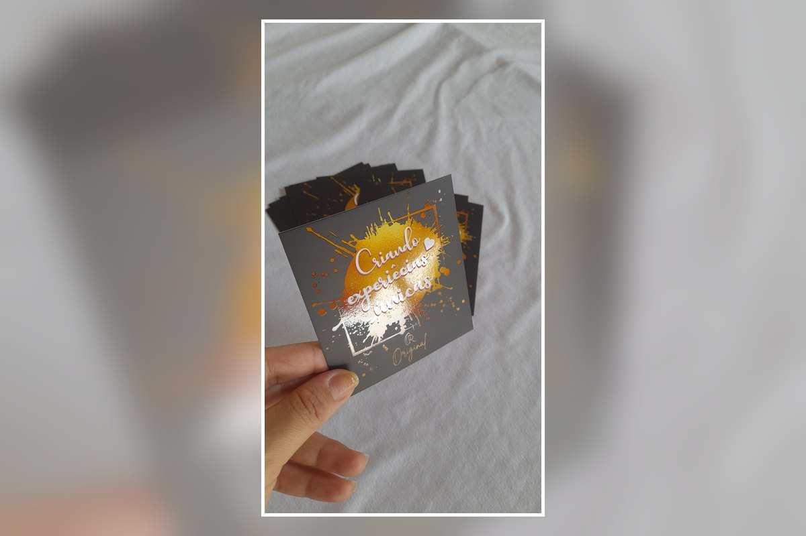

Brilho em áreas selecionadas
Logo, nome, ícones ou detalhes gráficos podem receber o efeito localizado para ganhar destaque.
O verniz localizado cria contraste de brilho em áreas específicas da arte, destacando logo, nome da marca, textos ou elementos gráficos. É uma opção sofisticada para quem busca um cartão com apresentação premium.

O verniz localizado é aplicado apenas em pontos escolhidos da arte. Isso permite criar diferença de textura e brilho, valorizando elementos importantes sem deixar o cartão visualmente carregado.
Logo, nome, ícones ou detalhes gráficos podem receber o efeito localizado para ganhar destaque.
A combinação entre acabamento fosco e brilho localizado cria contraste elegante e uma apresentação profissional.
Arte, cores, formato, quantidade e aplicação do acabamento são definidos de acordo com o projeto.
Envie sua arte, referência ou ideia pelo WhatsApp. Analisamos quais áreas podem receber o verniz localizado e confirmamos formato, quantidade, material, prazo e valor antes da produção.
Envie sua referência e solicite um orçamento personalizado.